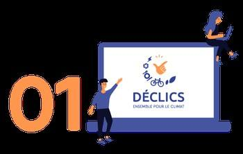

Les DEFIS DECLICS 2021-2022
Qu’est-ce que c’est ?
Le programme Déclics permet aux citoyens de s’investir à leur échelle dans la lutte contre les émissions de gaz à effet de serre. Cette animation conviviale visant à modifier les comportements individuels et collectifs du quotidien, en adaptant ses pratiques grâce à des accompagnements et des conseils, succède au programme « Familles à Energie Positive » (FAEP).
Entre 2008 et 2018, plus de 40 000 foyers ont participé en équipe aux défis. Des démarches qui ont permis de réaliser :
– 12 % d’économies en moyenne sur les consommations énergétiques
– soit environ 200 euros par an, par foyer, sans investissement financier
– ainsi qu’une économie d’eau de 13 % en moyenne
- le tout ayant permis d’éviter l’émission de 1400 teqCO2 !
Comment ça marche ?
► Tout d’abord, je crée mon compte.
https://defis-declics.org/fr/mon-compte/register/
- ►Suivez ensuite les étapes qui vous mèneront à une belle aventure en famille et partagée avec vos voisins, collègues ou amis en participant aux défis proposés…
- ►Découvrez les événements et l’actualité de votre territoire !